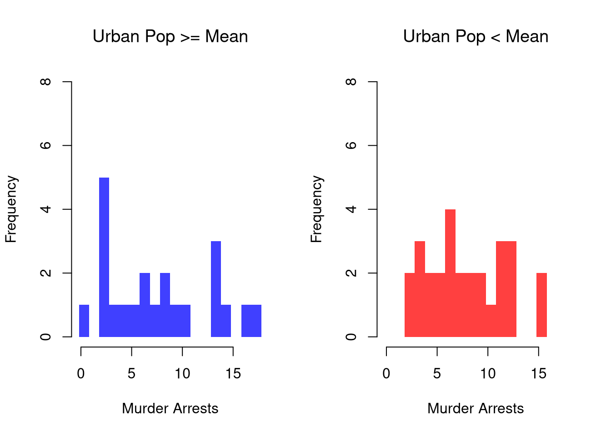
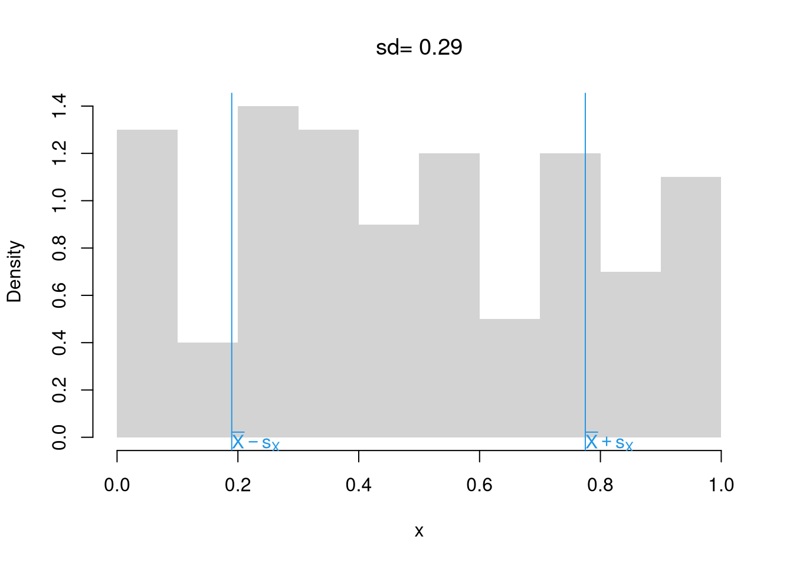

5 Statistics
We often summarize distributions with statistics: functions of data. The most basic way to do this is
## Min. 1st Qu. Median Mean 3rd Qu. Max.
## 0.0000653 0.2433963 0.5054190 0.5039852 0.7685290 0.9995000## Min. 1st Qu. Median Mean 3rd Qu. Max.
## -2.84855 -0.65619 -0.05057 -0.02011 0.64258 3.42110The values in “summary” can all be calculated individually. (E.g., the “mean” computes the [sum of all values] divided by [number of values].) There are many other combinations of statistics you can use.
5.1 Mean and Variance
The most basic statistics summarize the center of a distribution and how far apart the values are spread.
Mean. Perhaps the most common statistic is the mean; \[\overline{X}=\frac{\sum_{i=1}^{N}X_{i}}{N},\] where \(X_{i}\) denotes the value of the \(i\)th observation.
# compute the mean of a random sample
x <- runif(100)
hist(x, border=NA, main=NA)
m <- mean(x) #sum(x)/length(x)
abline(v=m, col=2, lwd=2)
title(paste0('mean= ', round(m,2)), font.main=1)
Variance. Perhaps the second most common statistic is the variance: the average squared deviation from the mean \[V_{X} =\frac{\sum_{i=1}^{N} [X_{i} - \overline{X}]^2}{N}.\] The standard deviation is simply \(s_{X} = \sqrt{V_{X}}\).2
s <- sd(x) # sqrt(var(x))
hist(x, border=NA, main=NA, freq=F)
s_lh <- c(m - s, m + s)
abline(v=s_lh, col=4)
text(s_lh, -.02,
c( expression(bar(X)-s[X]), expression(bar(X)+s[X])),
col=4, adj=0)
title(paste0('sd= ', round(s,2)), font.main=1)
Together, these statistics summarize the central tendency and dispersion of a distribution. In some special cases, such as with the normal distribution, they completely describe the distribution. Other distributions are easier to describe with other statistics.
5.2 Shape Statistics
Central tendency and dispersion are often insufficient to describe a distribution. To further describe shape, we can compute these to “standard moments”:
\[Skew_{X} =\frac{\sum_{i=1}^{N} [X_{i} - \overline{X}]^3 / N}{ [s_{X}]^3 }\] \[Kurt_{X} =\frac{\sum_{i=1}^{N} [X_{i} - \overline{X}]^4 / N}{ [s_{X}]^4 }.\]
Skewness. Skew captures how symmetric the distribution is.

skewness <- function(x) {
x_bar <- mean(x)
m3 <- mean((x - x_bar)^3)
skew <- m3/(sd(x)^3)
return(skew)
}
skewness( rweibull(1000, shape=1))## [1] 1.721855## [1] -0.7698367Kurtosis. Kurt captures how many “outliers” there are.

kurtosis <- function(x) {
x_bar <- mean(x)
m4 <- mean((x - x_bar)^4)
kurt <- m4/(sd(x)^4) - 3
return(kurt)
}
kurtosis( rweibull(1000, shape=1))## [1] 6.318697## [1] 0.6659003Clusters/Gaps. You can also describe distributions in terms of how clustered the values are

But remember: a picture is worth a thousand words.
# Random Number Generator
r_ugly1 <- function(n, theta1=c(-8,-1), theta2=c(-2,2), rho=.25){
omega <- rbinom(n, size=1, rho)
epsilon <- omega * runif(n, theta1[1], theta2[1]) +
(1-omega) * rnorm(n, theta1[2], theta2[2])
return(epsilon)
}
# Large Sample
par(mfrow=c(1,1))
X <- seq(-12,6,by=.001)
rx <- r_ugly1(1000000)
hist(rx, breaks=1000, freq=F, border=NA,
xlab="x", main='')
5.3 Other Center/Spread Statistics
Median, Interquartile Range, Median Absolute Deviation. Recall that the \(q\)th quantile is the value where \(q\) percent of the data are below and (\(1-q\)) percent are above.
The median (\(q=.5\)) is the point where half of the data is lower values and the other half is higher. The first and third quartiles (\(q=.25\) and \(q=.75\)) together measure is the middle 50 percent of the data. The size of that range (interquartile range: the difference between the quartiles) represents “spread” or “dispersion” of the data.
The mean absolute deviation also measures spread \[ \tilde{X} = Med(X_{i}) \\ MAD_{X} = Med\left( | X_{i} - \tilde{X} | \right). \]
## [1] 0 4 0 7 0 0 0 3 3 0 0 0 2 0 0 2 1 0 4 3 0 0 6 2 0 2 0 1 0 0 0 3 2 0 0 1 0 4
## [39] 0 0 2 1 2 0 0 2 7 4 1 0
## [1] 0#sd(x)
#IQR(x) # diff( quantile(x, probs=c(.25,.75)))
mad(x, constant=1) # median( abs(x - median(x)) )## [1] 0# other absolute deviations:
#mean( abs(x - mean(x)) )
#mean( abs(x - median(x)) )
#median( abs(x - mean(x)) )Mode and Share Concentration. Sometimes, none of the above work well. With categorical data, for example, distributions are easier to describe with other statistics. The mode is the most common observation: the value with the highest observed frequency. We can also measure the spread/dispersion of the frequencies, or compare the highest frequency to the average frequency to measure concentration at the mode.
## [,1] [,2] [,3]
## [1,] 0 0 0
## [2,] 0 0 0
## [3,] 0 0 0
## [4,] 0 0 0
## [5,] 0 0 0
## [6,] 1 0 0
## [7,] 0 0 0
## [8,] 0 0 0
## [9,] 0 0 0
## [10,] 0 0 0
## [11,] 0 0 1
## [12,] 0 0 0
## [13,] 0 0 0
## [14,] 0 0 0
## [15,] 0 0 0
## [16,] 0 0 0
## [17,] 0 0 0
## [18,] 0 0 0
## [19,] 0 1 0
## [20,] 0 0 0
## [21,] 0 0 0
## [22,] 0 0 0
## [23,] 0 0 0
## [24,] 0 0 0
## [25,] 0 0 0
## [26,] 0 0 0# Draw Random Letters 100 Times
x_id <- rowSums(rmultinom(100, 1, prob=rep(1/K,K)))
x <- lapply(1:K, function(k){
rep(LETTERS[k], x_id[k])
})
x <- factor(unlist(x), levels=LETTERS)
plot(x)
## [1] "H"## [1] 0.01541228## [1] 1.825.4 Associations
There are several ways to quantitatively describe the relationship between two variables, \(Y\) and \(X\). The major differences surround whether the variables are cardinal, ordinal, or categorical.
Pearson (Linear) Correlation. Suppose \(X\) and \(Y\) are both cardinal data. As such, you can compute the most famous measure of association, the covariance: \[ C_{XY} = \sum_{i} [X_i - \overline{X}] [Y_i - \overline{Y}] / N \]
# Bivariate Data from USArrests
xy <- USArrests[,c('Murder','UrbanPop')]
#plot(xy, pch=16, col=grey(0,.25))
cov(xy)## Murder UrbanPop
## Murder 18.970465 4.386204
## UrbanPop 4.386204 209.518776Note that \(C_{XX}=V_{X}\). For ease of interpretation, we rescale this statistic to always lay between \(-1\) and \(1\) \[ r_{XY} = \frac{ C_{XY} }{ \sqrt{V_X} \sqrt{V_Y}} \]
## [1] 0.06957262Falk Codeviance. The Codeviance is a robust alternative to Covariance. Instead of relying on means (which can be sensitive to outliers), it uses medians (\(\tilde{X}\)) to capture the central tendency.3 We can also scale the Codeviance by the median absolute deviation to compute the median correlation. \[ \text{CoDev}(X,Y) = \text{Med}\left\{ |X_i - \tilde{X}| |Y_i - \tilde{Y}| \right\} \\ \tilde{r}_{XY} = \frac{ \text{CoDev}(X,Y) }{ \text{MAD}(X) \text{MAD}(Y) }. \]
cor_m <- function(xy) {
# Compute medians for each column
med <- apply(xy, 2, median)
# Subtract the medians from each column
xm <- sweep(xy, 2, med, "-")
# Compute CoDev
CoDev <- median(xm[, 1] * xm[, 2])
# Compute the medians of absolute deviation
MadProd <- prod( apply(abs(xm), 2, median) )
# Return the robust correlation measure
return( CoDev / MadProd)
}
cor_m(xy)## [1] 0.005707763Kendall’s Tau. Suppose \(X\) and \(Y\) are both ordered variables. Kendall’s Tau measures the strength and direction of association by counting the number of concordant pairs (where the ranks agree) versus discordant pairs (where the ranks disagree). A value of \(\tau = 1\) implies perfect agreement in rankings, \(\tau = -1\) indicates perfect disagreement, and \(\tau = 0\) suggests no association in the ordering. \[ \tau = \frac{2}{n(n-1)} \sum_{i} \sum_{j > i} \text{sgn} \Bigl( (X_i - X_j)(Y_i - Y_j) \Bigr), \] where the sign function is: \[ \text{sgn}(z) = \begin{cases} +1 & \text{if } z > 0\\ 0 & \text{if } z = 0 \\ -1 & \text{if} z < 0 \end{cases}. \]
xy <- USArrests[,c('Murder','UrbanPop')]
xy[,1] <- rank(xy[,1] )
xy[,2] <- rank(xy[,2] )
# plot(xy, pch=16, col=grey(0,.25))
tau <- cor(xy[, 1], xy[, 2], method = "kendall")
round(tau, 3)## [1] 0.074Cramer’s V. Suppose \(X\) and \(Y\) are both categorical variables; the value of \(X\) is one of \(1...r\) categories and the value of \(Y\) is one of \(1...k\) categories. Cramer’s V quantifies the strength of association by adjusting a “chi-squared” statistic to provide a measure that ranges from 0 to 1; 0 indicates no association while a value closer to 1 signifies a strong association.
First, consider a contingency table for \(X\) and \(Y\) with \(r\) rows and \(k\) columns. The chi-square statistic is then defined as:
\[ \chi^2 = \sum_{i=1}^{r} \sum_{j=1}^{k} \frac{(O_{ij} - E_{ij})^2}{E_{ij}}. \]
where
- \(O_{ij}\) denote the observed frequency in cell \((i, j)\),
- \(E_{ij} = \frac{R_i \cdot C_j}{n}\) is the expected frequency for each cell if \(X\) and \(Y\) are independent
- \(R_i\) denote the total frequency for row \(i\) (i.e., \(R_i = \sum_{j=1}^{k} O_{ij}\)),
- \(C_j\) denote the total frequency for column \(j\) (i.e., \(C_j = \sum_{i=1}^{r} O_{ij}\)),
- \(n\) be the grand total of observations, so that \(n = \sum_{i=1}^{r} \sum_{j=1}^{k} O_{ij}\).
Second, normalize the chi-square statistic with the sample size and the degrees of freedom to compute Cramer’s V.
\[ V = \sqrt{\frac{\chi^2 / n}{\min(k - 1, \, r - 1)}}, \]
where:
- \(n\) is the total sample size,
- \(k\) is the number of categories for one variable,
- \(r\) is the number of categories for the other variable.
## UrbanPop
## Murder (31.9,46.8] (46.8,61.5] (61.5,76.2] (76.2,91.1]
## (0.783,6.33] 4 5 8 5
## (6.33,11.9] 0 4 7 6
## (11.9,17.4] 2 4 2 3cor_v <- function(xy){
# Create a contingency table from the categorical variables
tbl <- table(xy)
# Compute the chi-square statistic (without Yates' continuity correction)
chi2 <- chisq.test(tbl, correct=FALSE)$statistic
# Total sample size
n <- sum(tbl)
# Compute the minimum degrees of freedom (min(rows-1, columns-1))
df_min <- min(nrow(tbl) - 1, ncol(tbl) - 1)
# Calculate Cramer's V
V <- sqrt((chi2 / n) / df_min)
return(V)
}
cor_v(xy)## X-squared
## 0.23070715.5 Beyond Basics
Use expansion “packages” for less common procedures and more functionality
CRAN. Most packages can be found on CRAN and can be easily installed
# commonly used packages
install.packages("stargazer")
install.packages("data.table")
install.packages("plotly")
# other statistical packages
install.packages("extraDistr")
install.packages("twosamples")
# install.packages("purrr")
# install.packages("reshape2")The most common tasks also have cheatsheets you can use.
For example, to generate ‘exotic’ probability distributions
library(extraDistr)
par(mfrow=c(1,2))
for(p in c(-.5,0)){
x <- rgev(2000, mu=0, sigma=1, xi=p)
hist(x, breaks=50, border=NA, main=NA, freq=F)
}
title('GEV densities', outer=T, line=-1)
library(extraDistr)
par(mfrow=c(1,3))
for(p in c(-1, 0,2)){
x <- rtlambda(2000, p)
hist(x, breaks=100, border=NA, main=NA, freq=F)
}
title('Tukey-Lambda densities', outer=T, line=-1)
5.6 Further Reading
Many random variables are related to each other
- https://en.wikipedia.org/wiki/Relationships_among_probability_distributions
- https://www.math.wm.edu/~leemis/chart/UDR/UDR.html
- https://qiangbo-workspace.oss-cn-shanghai.aliyuncs.com/2018-11-11-common-probability-distributions/distab.pdf
Note that numbers randomly generated on your computer cannot be truly random, they are “Pseudorandom”.